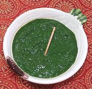

|
Cilantro Mint ChutneyIndia - Hari Chutney / Dhaniya Pudhina Chutney | ||||
| Makes: Effort: Sched: DoAhead: |
3/4 cup ** 25 min Yes |
One of the "must have" Chutneys at Indian buffets. Served particularly with deep fried snacks. Very tasty, not too hot. | |||
|
1 1/2 1 3/4 2 1 1/2 1/2 1-1/2 1/4 |
c c in cl t t T T c |
Cilantro Mint Chili, Green (1) Ginger root Garlic Cumin, toasted (2) Chaat Masala (3) Salt Lime Juice Water |
Measures for Cilantro and Mint are firmly packed. Make - (25 min)
|